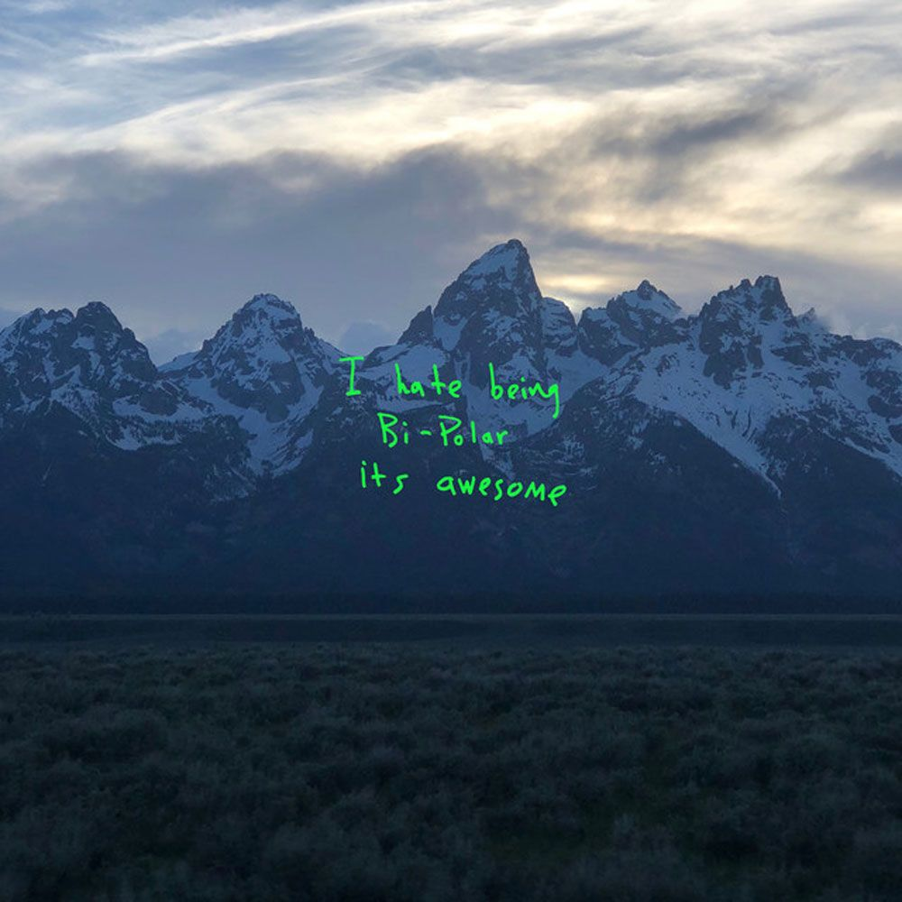
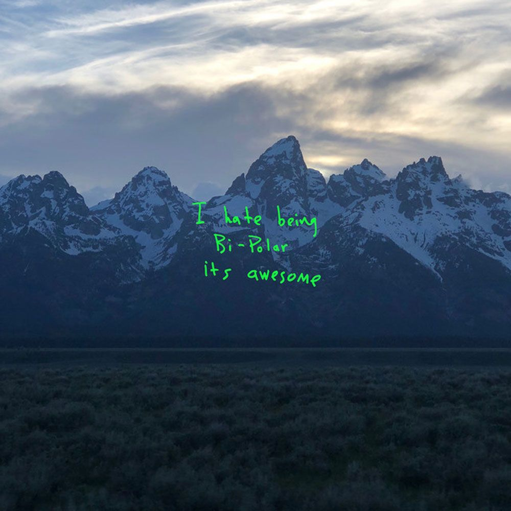

Kanye is experimental when it comes to music. Each album is different from the previous. Kanye has ten studio albums dating back from 2004. Kanye is mainly known for his talent in producing music. He has an artistic style when it comes to sampling music and making it his own. Every album has its own unique listening experience and everyone will be able to find something they like out of the ten albums.


 
